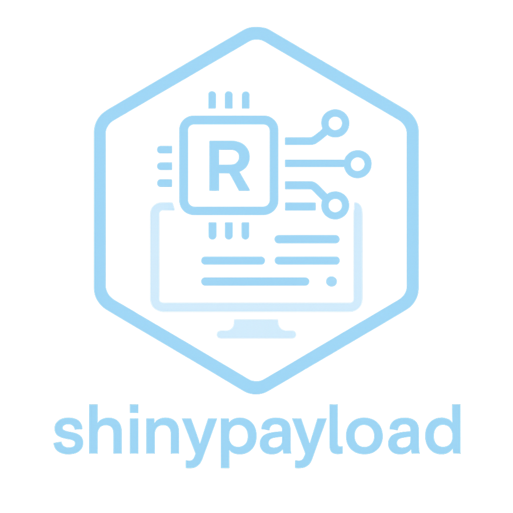

Contributing to shinypayload
Source:.github/CONTRIBUTING.md
We love your input! We want to make contributing to shinypayload as easy and transparent as possible, whether it’s:
- Reporting a bug
- Discussing the current state of the code
- Submitting a fix
- Proposing new features
- Becoming a maintainer
🚀 Quick Start
- Fork the repository
-
Clone your fork:
git clone https://github.com/yourusername/shinypayload.git -
Install development dependencies:
devtools::load_all() -
Create a feature branch:
git checkout -b feature/amazing-feature - Make your changes
-
Test your changes:
devtools::test() -
Check the package:
devtools::check() -
Commit your changes:
git commit -m 'Add amazing feature' -
Push to your branch:
git push origin feature/amazing-feature - Open a Pull Request
🛠Bug Reports
We use GitHub issues to track public bugs. Report a bug by opening a new issue.
Great Bug Reports tend to have:
- A quick summary and/or background
- Steps to reproduce
- Be specific!
- Give sample code if you can
- What you expected would happen
- What actually happens
- Notes (possibly including why you think this might be happening, or stuff you tried that didn’t work)
💡 Feature Requests
We welcome feature requests! Please:
- Check existing issues to avoid duplicates
- Describe the problem you’re trying to solve
- Describe the solution you’d like to see
- Consider alternatives you’ve thought about
- Provide examples of how it would be used
📠Code Style
We use automated code styling. Before submitting:
# Style your code
styler::style_pkg()
# Check for linting issues (optional)
lintr::lint_package()🧪 Testing
We maintain high test coverage. When adding features:
- Write tests first (TDD approach preferred)
- Test edge cases and error conditions
- Use descriptive test names
- Group related tests in contexts
# Run all tests
devtools::test()
# Run specific test file
devtools::test(filter = "payload")
# Test with coverage
covr::package_coverage()📚 Documentation
Function Documentation
Use roxygen2 for all exported functions:
#' Brief description
#'
#' Longer description if needed
#'
#' @param param_name Description of parameter
#' @return Description of return value
#' @export
#' @examples
#' \dontrun{
#' example_usage()
#' }
my_function <- function(param_name) {
# implementation
}🚦 Pull Request Process
- Update documentation for any new/changed functionality
- Add tests that prove your fix/feature works
- Ensure CI passes - all tests, checks, and style requirements
- Update NEWS.md if your change is user-facing
- Be patient - maintainers will review when possible
🏷️ Versioning
We use Semantic Versioning. For the versions available, see the tags on this repository.
📄 License
By contributing, you agree that your contributions will be licensed under the MIT License.
🤠Code of Conduct
This project follows the Contributor Covenant Code of Conduct. By participating, you are expected to uphold this code.
📠Questions?
Don’t hesitate to ask! You can:
- Open an issue for bug reports or feature requests
- Start a discussion for questions
- Email the maintainer: prm@outlook.in